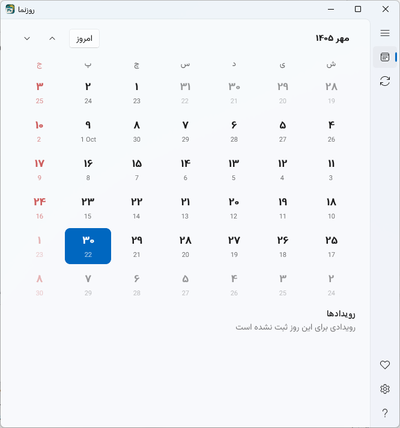
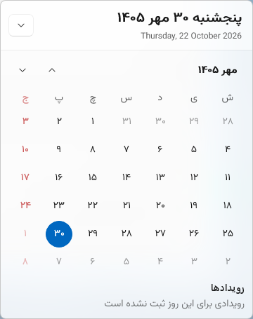

01 / TRAY
تاریخ، کنار ساعت
عدد روز شمسی روی آیکون System Tray نمایش داده میشود و تاریخ کامل از طریق توضیح آیکون در دسترس است.
روزنما تقویم شمسی را به گوشهای از ویندوز میآورد که همیشه به آن سر میزنی؛ کنار ساعت، در System Tray.
روز شمسی را روی آیکون ببین، با یک کلیک تقویم را باز کن و تاریخ شمسی و میلادی را بدون جستوجو در دسترس داشته باش.


برای دیدن تاریخ لازم نیست پنجرهای را باز کنی یا از کاری که انجام میدهی بیرون بیایی. روزنما در System Tray میماند؛ درست همانجا که انتظارش را داری.
امکانات ضروری یک تقویم شمسی، بدون شلوغی و پیچیدگی اضافه.
عدد روز شمسی روی آیکون System Tray نمایش داده میشود و تاریخ کامل از طریق توضیح آیکون در دسترس است.
با کلیک روی آیکون، نمای تقویم را در پنجرهای جمعوجور کنار تسکبار ببین.
تبدیل تاریخ شمسی و میلادی در محیط اصلی برنامه.
ظاهر برنامه را با سلیقهات هماهنگ کن یا انتخاب تم را به ویندوز بسپار.
رابط کاربری دو زبانه با پشتیبانی از نمایش فارسی و فونت وزیرمتن.
برای دسترسی روزانه طراحی شده؛ با امکان اجرای خودکار هنگام ورود به ویندوز.
در پنجره اصلی، نمای بزرگتری از ماه در اختیار داری؛ روزها را مرور کن، تاریخ معادل میلادی را ببین و از مبدل تاریخ استفاده کن.
مشاهده سورس پروژهروزنما رایگان و متنباز است. نسخههای منتشرشده و فایلهای نصب را از صفحه رسمی انتشار در GitHub دریافت کن.
رفتن به صفحه دانلود برای اطلاع از آخرین نسخه، توضیحات و فایلهای همان انتشار را بررسی کن.